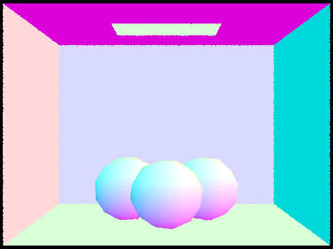
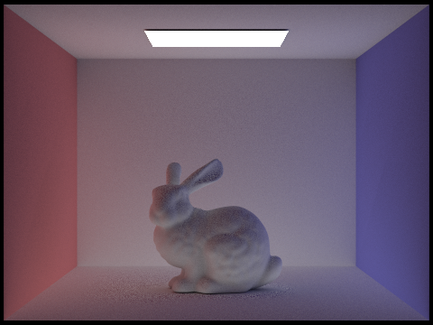

The core rendering loop of our path tracer program consists of mostly
calls to PathTracer::raytrace_pixel. This function is
called for each pixel in the image, and traces num_samples
camera rays through the scene. For each sample, it generates a ray from
camera through that pixel, and traces it through the scene, detecting
intersections with the scene’s geometry and then computing the color of
the pixel based the interactions.
The camera consists of a viewing origin, located at (0,0), as well as a sensor located in the
plane z = − 1. All paths
traced by our path tracer start at the viewing origin, and the
intersection of the ray with the sensor corresponds to the pixel in the
image. To generate a ray for a pixel, we implemented
Camera::generate_ray, which converts the pixel coordinates
to the coordinates on the camera sensor, and then constructs a ray from
the viewing origin through the sensor.
FInally, as the ray is traced through the scene, we detect
intersections with the scene’s geometry. At the lowest-level, the scene
is made up of many Primitive objects, which, for our
purposes, can be either Triangle or Sphere
objects. To detect intersections with the scene’s geometry, we
implemented Triangle::intersect and
Sphere::intersect, as well as their corresponding
has_intersection functions. Higher-level objects like
Mesh can be built up from these low-level primitives, and
computing intersections with them is done by checking intersections with
each of their constituent primitives.
Detecting intersections with triangles can be done by first computing the intersection point of the ray with the plane defined by the triangle, and then checking if the intersection point is inside the triangle. However, we instead used the Möller–Trumbore intersection algorithm, which can perform the intersection test in a single step.
The Möller–Trumbore intersection algorithm returns the barycentric
coordinates of the intersection point, which can be used to determine if
the intersection point is inside the triangle, meaning all three
coordinates are non-negative and sum to 1. (Actually, the third
coordinate is determined completely by the first two, which simplifies
our calculations.) Additionally, it tells us the time of intersection,
which we check to ensure is positive and within the bounds already
specified on the Ray object.
Shown below are a couple of images rendered using our path tracer so far, with normal shading.

Currently, our path tracer tests every ray against every primitive in the scene. To speed up intersection tests, we implemented a bounding volume hierarchy (BVH) to organize the primitives in the scene. The BVH turns the primitives into a binary tree, where each node contains a bounding box that encompasses all the primitives in its subtree. This allows us to quickly discard large portions of the scene when testing for intersections.
First, we implemented the BVH using a naïve median algorithm, where we first select the axis with the largest extent, and then sort the primitives along that axis, splitting the tree into two equally-sized subtrees. We then recursively split each subtree into two more subtrees, until we reach a leaf node, which contains a small number of primitives.
We also implemented a more optimal surface area heuristic (SAH) algorithm, which attempts to minimize the expected cost of traversing the tree. This algorithm is described in Part 6.
Shown below are a couple of images that we can render now that we have a BVH.
These models have over 100,000 triangles, and rendering them without
a BVH would be prohibitively slow. We ran the path tracer for a minute
on the CBlucy model, and it barely managed to render past
1%. With the BVH, it renders in 0.2 seconds.
Comparing the performance of rendering with and without the BVH, we
see a huge speedup. Rendering the CBcoil model took 0.1104
seconds with the BVH, and 50 seconds without. The CBbunny
model took 0.1378 seconds with the BVH, and 376 seconds without. This is
a speedup of almost 3000x for the bunny model.
In this part, we implemented a Monte Carlo estimator for direct lighting, which allows us to compute the color of a point in the scene by sampling the light sources directly.
The first method we implemented for sampling the rays was uniform
hemisphere sampling
(PathTracer::estimate_direct_lighting_hemisphere), which
simply samples a random direction from the hemisphere. With this method,
we pick a random direction from a uniform distribution over the
hemisphere, and then trace a ray in that direction to see if it
intersects with any of the light sources. If it does, we compute the
color of the point based on the color of the light source and the
material properties of the surface, using BSDF::f,
multiplying this by the cosine of the angle between the normal and the
direction of the light source, and then dividing by the probability of
sampling that direction.
This method is simple and easy to implement, but in practice leads to noisier results, especially for small light sources. With a large number of samples, it converges to the correct result, but it takes a long time to do so. Furthermore, it can’t handle point light sources, as the probability of intersecting a point light source is 0.
For the second method, we implemented importance sampling
(PathTracer::estimate_direct_lighting_importance), which
samples every light source in the scene directly. This method is more
complex, since we need to calculate the probability of sampling each
light source, but it leads to much less noisy results. This is because
it avoids shooting out many random rays which don’t intersect with any
light sources, and instead focuses on the light sources themselves. This
method also handles point light sources.
We also tested the importance sampling method with different numbers of light samples per pixel. The results are shown in the table below.
| 1 sample | 4 samples | 16 samples | 64 samples |
|---|---|---|---|
|
Looking at the soft shadows on the left side of the bunny, we can see that a higher number of samples leads to a significantly less noisy result.
To illustrate the difference between the two methods, we rendered the
CBbunny model with both methods. The results are shown
below, with the uniform hemisphere sampling on the left.
Overall, the importance sampling method produces a much less noisy result. Especially since there was only one light, and the number of samples was relatively small, we can see the noise caused by the uniform hemisphere sampling method being less representative than importance sampling.
In this part, we implemented global illumination, which allows us to compute the color of a point in the scene by sampling the indirect light that bounces around the scene, in addition to the light that directly hits the point from a light source. This is done by recursively tracing rays from the point to other points in the scene, and then computing the color of the point based on the colors of the points it bounces to.
Our function PathTracer::at_least_one_bounce_radiance
provides this functionality. For each intersection from the camera ray
in the scene, we first calculate the one bounce radiance, and then
sample a random direction from the BSDF of the surface, and trace a new
ray in that direction. If the new ray intersects with the scene, we
recursively compute the color of the point it intersects with,
multiplying that by the probability of sampling that direction, and the
angle between the normal and the direction of the new ray. Since this is
a recursive process, we limit the depth of the rays to a certain number,
only computing indirect light for up to that number of bounces.
We rendered the CBbunny scene once with only
direct illumination, and once with only indirect illumination.
The results are shown below.

We can see that the direct illumination is much brighter, and the indirect illumination is generally darker. However, the indirect illumination also provides a lot of detail that is not present in the direct illumination, such as the soft red and blue shading throughout the whole image.
Combined, these two images give us the full global illumination, shown below:
We also tested the global illumination method with different numbers of bounces. The results are shown in the table below. The first row shows the result of computing the n-th bounce only, and the second row shows the result of bounces 0 to n accumulate.
Additionally, we tested the global illumination method with Russian Roulette, which is a technique to terminate rays early based on their probability of continuing. The third row shows the result of bounces 0 to n with Russian Roulette enabled. We can see that Russian Roulette does not significantly affect the result, but it does speed up the rendering by a lot.
| # bounces | 0 | 1 | 2 | 3 | 4 | 5 |
|---|---|---|---|---|---|---|
| n-th bounce only |  |
|||||
| 0 to n bounces | ||||||
| 0 to n bounces w/ Russian Roulete |
Here is a rendering with maximum depth set to 100 and Russian Roulette enabled:
We can see the effects that tracing multiple rays per pixel has on the final image. Tracing more rays reduces the noise in the image. The results are shown in the table below.
| # samples | image |
|---|---|
| 1 | |
| 2 | |
| 4 | |
| 16 | |
| 64 | |
| 1024 |
Adaptive sampling allows us to potentially reduce noise more efficiently than uniform sampling, by using a statistical model in order to increase the number of samples for areas of the image that require more noise reduction to converge. In our implementation, when calculating the raytrace through each pixel, we calculate a measurement of the pixel’s convergence I as 1.96 multiplied by its variance divided by the square root of the number of samples. If this measurement is at most maxTolerance multiplied by the mean (where maxTolerance is a parameter passed in by the user), we update the sample buffer and stop the ray tracing loop.
Below is a rendering at 2048 samples per pixel, 1 sample per light, and a max ray depth of 5, as well as its respective sampling rate image. Note the higher sampling rate (represented in red) where the spheres are in shadow, versus the lower sampling rate (represented in blue) of the floors and wall.

Here is another scene with the same rendering parameters:
How good a BVH is at speeding up intersection tests depends on how well it divides the scene. To attain maximal speedup, we implemented the surface area heuristic (SAH) to guide the construction of the BVH. By partitioning the tree in a way that mostly minimizes the surface areas of the subtree bounding boxes (also taking the number of primitives in each subtree into account) and thus the probability a ray intersects a subtree, we can maximize the number of primitives that can be discarded at each step.
To illustrate this, let’s say we have the following scene, and consider two ways of partitioning it into subtrees:
Original Objects Partition 1 Partition 2
................. ........┏━━━━━━━┓ ...........┏━━━━┓
............#..#. ┏━┓.....┃...#..#┃ ┏━━━━━━━━━┓┃#..#┃
.#.......#....#.. ┃#┃.....┃#....#.┃ ┃#.......#┃┃..#.┃
.........#...#.#. ┗━┛.....┃#...#.#┃ ┃........#┃┃.#.#┃
................. ........┗━━━━━━━┛ ┗━━━━━━━━━┛┗━━━━┛Note how Partition 1 results in smaller bounding boxes and much more empty space between the them. A ray that goes between the two bounding boxes without hitting either of them could be immediately discarded in Partition 1, but not in Partition 2. This is the kind of optimization the SAH aims to achieve.
To actually implement SAH, we first need to find the best split for a given set. This is hard to do for lots of objects, so we approximate by bucketing the extent of the bounding box into a relatively small number of buckets, and then trying every possible split point between the buckets. We then choose the split that minimizes the SAH cost, which is a combination of the surface area of the bounding boxes and the number of primitives in each subtree.
Measuring the performance, we see that the SAH BVH is faster than the naïve median BVH, albeit not by too much:
| Model | Median BVH | SAH BVH |
|---|---|---|
CBcoil |
0.1104s | 0.085s |
CBbunny |
0.1378s | 0.1098s |